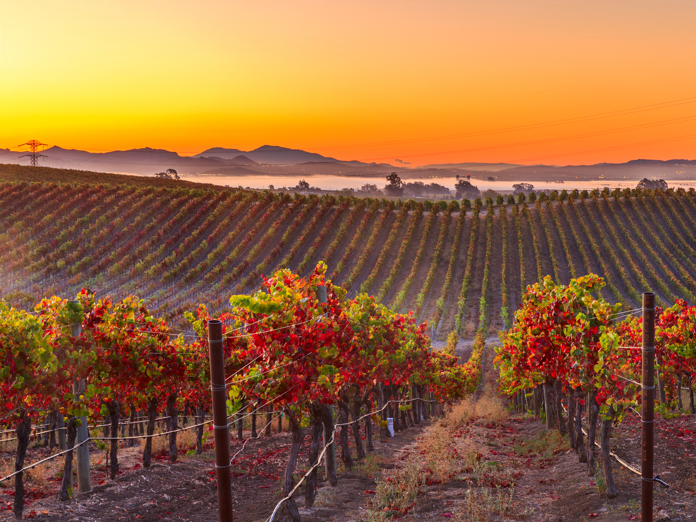

Indulge in California's Culinary Scene
Napa Valley Wine Region
Experience the exquisite flavors of Napa Valley, known for its world-renowned wineries and gourmet dining. Explore vineyards, indulge in wine tastings, and savor farm-to-table cuisine in award-winning restaurants nestled among picturesque landscapes.
Learn MoreSan Francisco's Ferry Building Marketplace
Tantalize your taste buds at San Francisco's Ferry Building Marketplace, a food lover's paradise. Sample artisanal cheeses, fresh seafood, gourmet chocolates, and organic produce from local farmers. Don't miss the iconic farmers' market on Saturdays.
Learn MoreLos Angeles's Grand Central Market
Immerse yourself in the vibrant food scene at Los Angeles's Grand Central Market. Taste an array of international cuisines, from tacos and pupusas to sushi and ramen. Discover local vendors, food stands, and unique culinary offerings.
Learn MoreSan Diego's Little Italy

Visit San Diego's Little Italy and indulge in authentic Italian cuisine. Enjoy delicious pasta, wood-fired pizzas, and decadent gelato while strolling through charming streets lined with boutique shops and art galleries.
Learn MoreSanta Barbara's Funk Zone
Explore Santa Barbara's Funk Zone, a lively neighborhood known for its urban wine trail, craft breweries, and eclectic dining options. Enjoy wine tastings, beer flights, farm-to-table cuisine, and vibrant street art in this artistic enclave.
Learn MoreMonterey's Fisherman's Wharf
Delight in fresh seafood and ocean views at Monterey's Fisherman's Wharf. Indulge in clam chowder, grilled fish, and Dungeness crab while taking in the sights and sounds of the bustling waterfront. Don't forget to visit the local seafood markets and restaurants.
Learn More